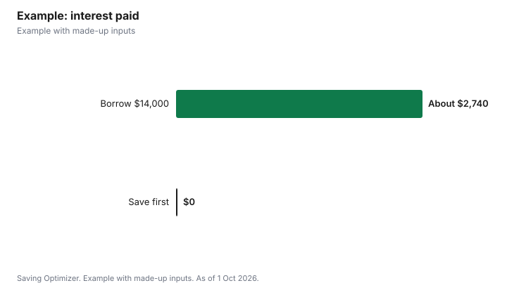

Weddings · Canada
Paying for a Wedding Without Debt in Canada: Cash Budget, Saving Timeline and Borrowing Costs
To pay for a wedding without debt in Canada, set the budget from cash you can actually have by each payment date: savings already set aside, plus what you can save each month until the final balances are due, plus family gifts that are confirmed, not hoped for. Then line up vendor deposits with your saving plan so each payment is funded before it is due. Borrowing is expensive by comparison: FCAC's example personal loan uses a 19.99% rate, and a longer term means more total interest. Credit cards are only interest-free if you pay the full statement balance within the grace period, which FCAC says is at least 21 days at federally regulated issuers.
Key takeaways
- Cash budget = savings + monthly saving x months + confirmed gifts.
- Time your saving to deposit and balance dates.
- Personal loans: FCAC says longer terms cost more in total.
- Cards: pay the full statement within the grace period, or interest starts.
- 0% offers end on a set date, and a missed payment can end them early.
- Example with made-up inputs: saving vs a wedding loan.
Setting a cash budget
| Source | How to count it |
|---|---|
| Savings already set aside for the wedding | Full amount, minus your emergency fund |
| Monthly saving | Amount you can save each month x months until final payments |
| Family contributions | Only amounts confirmed, with timing |
| Cash gifts at the wedding | Do not count them toward paying vendors |
| Credit card rewards | Small; treat as a bonus, not a source |
Keep your emergency fund separate; a wedding that drains it leaves you exposed to a car repair or job loss right after. Once the total is set, divide it among priorities with the 2027 wedding budget line items, and include tax, service charges and tips.
Saving timeline
Vendor contracts may require deposits months before the wedding and balances close to the date. Write down every payment date and amount, then check your savings balance covers each one when due. If it does not, either move the date later, choose a smaller deposit option, or reduce the budget. A separate high-interest savings account or TFSA earmarked for the wedding makes progress visible.
| Month | Payment due | Funded from |
|---|---|---|
| 1 | Venue deposit | Existing savings |
| 3 | Photographer deposit | Existing savings |
| 6 | Caterer deposit | Monthly saving |
| 9 | Attire | Monthly saving |
| 15 | Invitations, flowers deposit | Monthly saving |
| 17 to 18 | Balances | Monthly saving and family gift |
Why wedding loans cost more
FCAC says personal loans typically range from $100 to $50,000 over 6 to 60 months, that lenders may not by law charge more than 35% a year including all fees and interest, and that the longer you take to pay off a loan, the more it costs. Its example uses a $2,000 loan at 19.99%. Federally regulated banks must offer products appropriate for your circumstances. A wedding loan also starts married life with a monthly payment for a party that is already over, which can delay other goals such as a home down payment.
Credit cards and 0% offers
- Grace period: FCAC says federally regulated issuers must give at least 21 days interest-free on purchases if you pay the full balance; there is no grace period on cash advances.
- Promotional rates: FCAC says issuers must disclose when an introductory rate ends, which transactions it covers, other fees, and the standard rate afterward. A late payment or going over the limit can end it early.
- Balance transfers: FCAC says these usually carry a fee as a percentage of the amount transferred, and promotional rates usually last 6 to 18 months.
- Retail financing: FCAC warns that if you do not pay the balance in full before an interest-free period ends, you may pay interest from the date of purchase.
- Surcharges: merchants may add up to 2.4% for credit card payments, except in Quebec, so rewards can be wiped out.
A 0% offer can be safe only if you already have the cash to pay it off before it ends and you set up automatic payments. Using it for spending you cannot cover is just delayed debt.
If the numbers do not add up
If the cash budget falls short of the wedding you want, change the plan rather than adding debt. The largest levers are usually guest count, date and venue type. Options covered elsewhere on this site include a Friday or Sunday date, off-season discounts, a city hall ceremony followed by a dinner, and comparing venue types. Moving the date six months later adds six more months of saving, which at $780 a month in the example below is $4,680.
Family contributions
Family gifts can be the biggest single source. Ask early and directly, get the amount and timing, and discuss expectations: some contributors expect a say in the guest list or venue. If money comes with conditions you do not want, it may be better to plan a smaller wedding you control. Treat the gift as received only when it is in your account. If several relatives contribute, keep a simple record of who gave what, so thank-you notes and any later questions are easy, and agree whether unspent money is returned or kept.
Plan
- Set the cash budget from confirmed sources only.
- List every vendor payment date.
- Open a dedicated savings account and automate transfers.
- Book vendors whose deposit schedules match your savings.
- Pay deposits by card only if you can clear the statement in full.
- Keep a 5 to 10% buffer for overages.
Example with made-up inputs
These numbers are an example with made-up inputs. A couple wants a $24,000 wedding in 18 months. They have $6,000 saved and a confirmed $4,000 family gift. Saving $780 a month for 18 months adds $14,040, for a total of $24,040, enough without debt. Alternatively, they could spend $24,000 now and borrow $14,000 at a made-up 12% over 36 months: payments of about $465 a month, total paid about $16,740, so $2,740 in interest. Waiting and saving avoids that cost, and the monthly amount is similar.
| Save for 18 months | Borrow $14,000 at 12% for 36 months | |
|---|---|---|
| Monthly amount | $780 | About $465 |
| Months of payments | 18 (before) | 36 (after) |
| Interest paid | $0 | About $2,740 |

Common mistakes
- Counting cash gifts at the wedding toward vendor bills.
- Emptying the emergency fund.
- Using a 0% offer without cash to repay it.
- Ignoring card surcharges when chasing rewards.
- Forgetting tax and tips in the total.
Related: vendor contracts and deposits and merging finances.
Sources
- Financial Consumer Agency of Canada, Personal loans; How credit cards work; Choosing a credit card; Debt consolidation, canada.ca, as of 1 Oct 2026.
- Financial Consumer Agency of Canada, Merchant surcharges, service and convenience fees, and discounts, canada.ca, as of 1 Oct 2026.
- Budgets, savings, rates and gifts in the example are made-up inputs.
Frequently asked questions
How do I set a wedding budget without debt?
Add savings already set aside, monthly saving times months until final payments, and confirmed family gifts. That total is your budget.
Is a wedding loan a good idea?
It adds interest. FCAC says longer loan terms cost more in total and lenders may not charge more than 35% a year including fees.
Can I put the wedding on a credit card?
Only if you pay the full statement balance within the grace period, which is at least 21 days at federally regulated issuers.
Are 0% credit card offers safe for weddings?
Only if you have the cash to repay before the offer ends. A missed payment can end the rate early.
Can vendors charge extra for paying by credit card?
Merchants may add a surcharge of up to 2.4% except in Quebec, and must disclose it before payment.
Should we count wedding cash gifts?
Do not count them toward paying vendors; treat them as a bonus after the wedding.
Researched and drafted with AI assistance and fact-checked against official Canadian sources. How we create content.
Disclosure: Saving Optimizer may earn a commission if a partner link is added later. No partnership is claimed on this page. Education only, not financial advice.